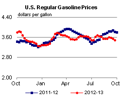
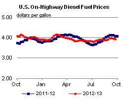
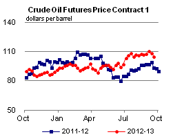
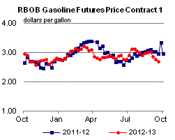
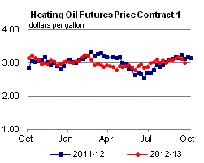
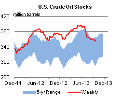
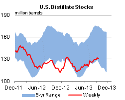
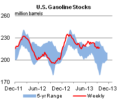
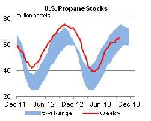

Released: September 25, 2013
Next Release: October 2, 2013
Understanding the "change of the stock change"
While avid college football fans eagerly await the Tuesday morning update of team rankings, crude oil and petroleum product market watchers often focus on the Wednesday morning release of the U.S. Energy Information Administration's (EIA) Weekly Petroleum Status Report (WPSR). Although the WPSR provides comprehensive details about U.S. crude oil and key petroleum products covering all sectors of the primary supply chain, many analysts often focus exclusively on the crude oil inventory change data point, using falling or rising crude stocks as an indicator of the relative tightness or looseness of crude oil markets. As a result, the release of weekly crude oil stocks data sometimes has a noticeable impact on crude oil price formation, so it is important to understand how to assess the weekly change in stocks, also known as the "change in the stock change," within the context of the weekly supply-demand balance.
EIA collects weekly data on gross imports of crude and petroleum products, crude and product inventories and refinery crude runs. EIA estimates weekly U.S. crude production and crude oil and petroleum product exports.
The weekly U.S. crude balance shows how crude oil consumption, represented by refinery runs, is supplied by domestic crude production and net crude imports. If these crude supply sources exceed refinery consumption for a week, any extra barrels go into storage, causing crude inventories to rise. If crude production and net imports are less than what refineries require for a given week, inventories are drawn down to meet their input requirements and maintain market balance (Figure 1).
{kind=link}
As a simplified example, assume the United States produces 7 million barrels per day (bbl/d) of crude oil while net crude oil imports are 8 million bbl/d, making available supplies from these sources total 15 million bbl/d. At the same time, if refinery demand for crude oil during the week is 16 million bbl/d, the 1 million bbl/d (7 million barrels for the week) supply shortfall would need to be met by drawing down inventories (Figure 2). Another way of stating this is that given the volume of imports and domestic production that week, crude oil inventories needed to be drawn down by 1 million barrels per day (7 million total for the week) in order to balance refinery demand that week with available crude oil supplies.
{kind=link}
To fully appreciate the non-intuitive but key impact of how the "change of the change" in stock levels affects weekly crude oil balances, one needs to consider how much stocks changed in the prior week in order to properly analyze the current week's change in stocks that is required to balance the crude market. When done this way, the impact of the change of the stock change becomes clear.
Using the example from above, which requires stocks to fall by 1 million bbl/d, assume that the following week (Week 2) refinery crude runs remain at 16 million bbl/d, domestic crude oil production remains at 7 million bbl/d, while net crude imports rise by 700,000 bbl/d and now total 8.7 million bbl/d (Figure 3). Crude supply (production plus net imports) is now 15.7 million bbl/d, which is still 300,000 bbl/d less than refinery runs. Thus, even though net imports increased by 700,000 bbl/d in week 2, crude stocks will still need to fall by 300,000 bbl/d, or roughly 2 million barrels for the week, in order to balance the market.
{kind=link}
The change of the change in stocks reflects the weekly increase in import volumes by showing a much smaller decline in crude inventories than the prior week, but the supply-demand balance still requires a draw in stocks to satisfy weekly refinery input demand in this example. Casual observers are often puzzled by a weekly stock draw during a week when crude imports have risen, which is why understanding the change in the stock change is crucial to properly analyzing weekly petroleum supply and consumption data.
Gasoline and diesel fuel prices both decrease again
The U.S. average retail price of regular gasoline decreased five cents to $3.50 per gallon as of September 23, 2013, 33 cents lower than last year at this time, and the lowest price since July 8. Prices were down in all regions of the nation, with both the East and Gulf Coast prices dropping seven cents, to $3.46 per gallon and $3.23 per gallon, respectively.The Midwest price was $3.46 per gallon, the Rocky Mountain price $3.59 per gallon, and the West Coast price $3.87 per gallon, all three cents lower than last week.
The national average diesel fuel price decreased three cents to $3.95 per gallon, 14 cents lower than last year at this time. The Rocky Mountain price increased less than a penny to remain at $3.94 per gallon, while prices in all other regions decreased. The East Coast price was $3.96 per gallon, two cents lower than last week. The Midwest, Gulf and West Coast prices all decreased three cents, to $3.93 per gallon, $3.86 per gallon, and $4.11 per gallon, respectively.
Propane stocks post another build
Total U.S. inventories increased by 1.0 million barrels last week to end at 65.5 million barrels, about 8.8 million barrels (11.9%) lower than the same week last year. Midwest stocks rose by 1.1 million barrels, while East Coast stocks grew 0.2 million barrels. Rocky Mountain/West Coast stocks were up by 0.1 million barrels. Gulf Coast inventories dropped by 0.4 million barrels. Propylene non-fuel-use inventories represented 4.8% of total propane inventories.
Text from the previous editions of This Week In Petroleum is accessible through a link at the top right-hand corner of this page.
|  |  | ||||||
| Retail Data | Change From Last | Retail Data | Change From Last | ||||
| 09/23/13 | Week | Year | 09/23/13 | Week | Year | ||
| Gasoline | 3.495 | Diesel Fuel | 3.949 | ||||
|  |  | ||||||||||||||||||||||||||
|
 | ||||||||||||||||||||||||||
| *Note: Crude Oil Price in Dollars per Barrel. | |||||||||||||||||||||||||||
|  |  | ||||||
|  |  | ||||||
| Stocks Data | Change From Last | Stocks Data | Change From Last | ||||
| 09/20/13 | Week | Year | 09/20/13 | Week | Year | ||
| Crude Oil | 358.3 | Distillate | 130.9 | ||||
| Gasoline | 216.2 | Propane | 65.455 | ||||